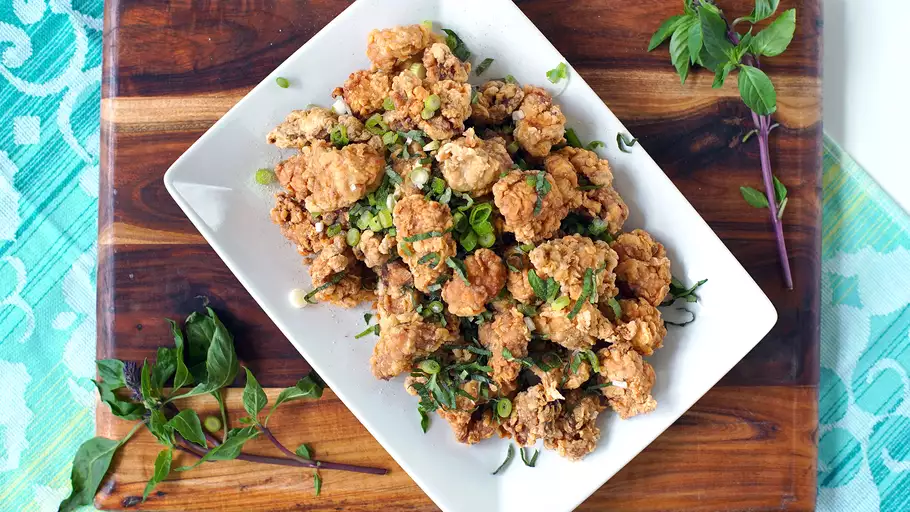

Taiwanese popcorn chicken

Description
Taiwanese fried chicken, westernized as popcorn chicken, is a dish in Taiwanese cuisine which is commonly found as a street snack in the night markets of Taiwan.
Taiwanese popcorn chicken is famous for its taste and texture. It is typically flavored with salt and pepper, with chili powder and fried basil leaves being common accompaniments.
Ingredients
- 1 1/2 pounds (680 grams) boneless chicken thighs, cut into 1/2 inch cubes
- 3 cloves garlic, finely chopped
- 1 tablespoon (16 grams) soy sauce
- 2 teaspoons (4 grams) freshly grated ginger
- 1 teaspoon (3 grams) five-spice powder
- white pepper, to taste
- 1 teaspoon (1.8 grams) cayenne pepper
- 1 large egg
- dry tempura batter mix, as needed
- peanut oil, as needed
- 1 bunch Thai basil
- 2 sprigs green onions, thinly chopped
Steps
- Mix chicken, garlic, soy sauce, ginger, five-spice powder, white pepper, salt, vinegar, and cayenne pepper together in a large bowl until well combined. Let marinate for 10 minutes.
- Heat oil in a deep-fryer or large saucepan to 400 degrees F (200 degrees C).
- Whisk egg in a small bowl until smooth. Place dry tempura mix into a second small bowl. Dip chicken pieces one at a time into egg, then dredge in tempura mix, shaking off any excess.
- Working in batches, lower chicken carefully into hot oil and fry until golden brown, 5 to 8 minutes. Transfer to a paper towel-lined plate to drain and season with salt and pepper.
- Transfer chicken to a platter and garnish with basil leaves and green onions.